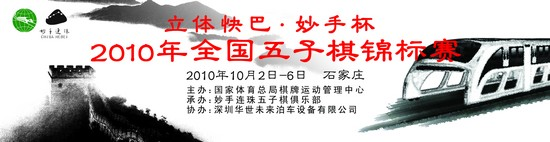

2010年全国五子棋锦标赛赞助商信息，期待您的支持
首页
五子棋新闻
#1 <font color="red">2010年全国五子棋锦标赛赞助商信息，期待您的支持</font> 作者：有志青年 发表时间：2010-9-27 6:36:57

大家帮投一下票 请大家一起支持低碳绿生活，关注立体快巴！
http://ditan.kdnet.net/reason.php?candidate_no=11是这次全国五子棋锦标赛的赞助商 ［此帖子已被 有志青年 在 2010-9-27 6:37:37 编辑过］
［此帖子已被 失落刀 在 2010-9-27 10:19:02 编辑过］
#2 Re:2010年全国五子棋锦标赛赞助商信息，期待您的支持 作者：深邃 发表时间：2010-9-27 6:48:29
顶
#3 Re:2010年全国五子棋锦标赛赞助商信息，期待您的支持 作者：失落刀 发表时间：2010-9-27 10:18:28
感谢和支持，已经投票。
#4 Re:2010年全国五子棋锦标赛赞助商信息，期待您的支持 作者：第五象限 发表时间：2010-9-27 10:26:41
申报理由：发明立体快巴，120项发明专利多与低碳有关
个人简历：
宋有洲，男，黑龙江省大庆人，因家庭贫困而辍学，断断续续读过六年书，小学肄业。1984年 开始经营饭店生意和搞建材批发生意，1998年 开始经营烟花爆竹。1999年开发出第一代中国礼宾花产品，当年通过了国家专利验收，并在北京参加了我国专利产品15年成就展。此后六年，发明专利源源不断。
申报事迹：
明年年底，立体快巴将在北京门头沟区载客运营。如今，上层载客下层通车的“立体快巴”项目进入制造环节――快巴的可行性研究报告交给南车集团，由该集团进行首辆车的设计和制造。此前，快巴刚通过专业机构的安全性评审。
“立体快巴”它犹如装了“高跷”的公交车，上面可载千余人，下面镂空，小汽车在其“肚子”下可自由穿行。这种零排放的“立体快巴”是我国完全自主创新、全世界独有的产品。每公里造价约5000万元人民币，较地铁每公里造价5亿至8亿低了九成，一年可建40公里。
立体快巴因其能解决交通拥堵和实现绿色出行，一时间激起了社会各界的热烈讨论。人们在惊叹这一巧妙构思的同时，更为它的发明者是中国人而感到由衷的自豪。中国网友称它为民族的希望，外媒则认为这是中国创造力复苏的体现。
而他的发明者，居然是一个只有小学肄业的民企老板――宋有洲。他小学都没毕业，却拥有120多项专利，是个不折不扣的“发明大王”，风靡全球的礼宾花、全国推广的警用装备抓捕网等发明均出自他之手。
从小家境贫寒的宋有洲尝试过很多工作，经商也好，建材也好，但是却一直没有停止过对发明的热情。按照他自己的看法，对他来说这已经成为了一种爱好和追求，虽然他发明的已成就了一个新兴行业的礼宾花没能让自己得到应有的收益，但他仍然无怨无悔，义无返顾地继续着他的发明创造之路。他曾说“做发明的如果一心只为金钱，肯定是做不好的。”
而宋有洲做发明的初衷，一直都是想对社会有所帮助。在目睹城市多年的道路拥堵之后，怎样更加低碳的出行，成为了宋有洲一直思考的问题。几年前他设计了一套不占用空间的未来泊车设备，而今年，他的零碳排放的立体公交车已通过评审，明年试行。
当大家还在热烈讨论未来的低碳应该怎么做时，宋有洲就这样不声不响地跑在了最前面，而他的这一项发明，每年减少的碳排放将以百万吨计算。
#5 Re:2010年全国五子棋锦标赛赞助商信息，期待您的支持 作者：消逝的雨 发表时间：2010-9-27 10:53:43
 支持下
支持下
#6 Re:2010年全国五子棋锦标赛赞助商信息，期待您的支持 作者：日出333 发表时间：2010-9-27 13:49:18
第一次听说立体快巴。。支持下！
#7 Re:2010年全国五子棋锦标赛赞助商信息，期待您的支持 作者：萱萱 发表时间：2010-9-27 21:26:07
 支持
支持
#8 Re:2010年全国五子棋锦标赛赞助商信息，期待您的支持 作者：gerbo 发表时间：2010-9-27 21:37:07
代表南车集团的全体员工感谢你，让我们今年的效益能突破150亿，目标是200亿，努力高效的完成李董布置给我们的作业。
感谢你们对五子棋事业的赞助。
#9 Re:2010年全国五子棋锦标赛赞助商信息，期待您的支持 作者：水月 发表时间：2010-9-27 22:19:08
上次新闻看到了～挺有意思的思路～
#10 Re:2010年全国五子棋锦标赛赞助商信息，期待您的支持 作者：小帮帮 发表时间：2010-9-28 0:22:14
支持是必须的，高科技啊！
#11 Re:2010年全国五子棋锦标赛赞助商信息，期待您的支持 作者：炫飞冰弦 发表时间：2010-9-29 17:27:50
支持！！
#12 Re:2010年全国五子棋锦标赛赞助商信息，期待您的支持 作者：怪 发表时间：2010-9-29 18:50:03
支持吧，这年头拉个赞助不容易。
#13 Re:2010年全国五子棋锦标赛赞助商信息，期待您的支持 作者：晓棋子 发表时间：2010-9-30 22:29:43
已经投票
#14 Re:2010年全国五子棋锦标赛赞助商信息，期待您的支持 作者：阔哥 发表时间：2010-10-2 17:54:06
感谢和支持，已经投票